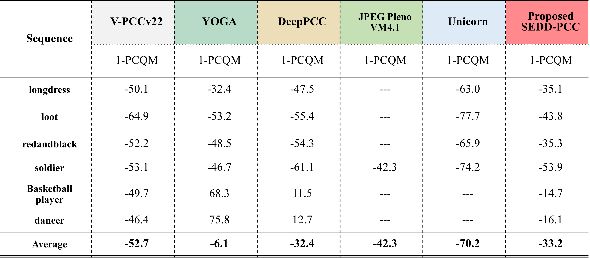

Fig. 1 Existing Learning-based point cloud compression solutions, (a) Geometry compression. (b) Attribute compression.
(c) Joint geometry and attribute compression through recoloring.
(d) Proposed SEDD-PCC: an end-to-end learned point cloud compression scheme.
🔍Problem: Most learning-based compression schemes treat geometry and attribute coding separately, employing distinct encoders and decoders. This not only increases computational complexity but also fails to fully exploit shared features between geometry and attributes.
✅Our Solution: To address this limitation, we propose SEDD-PCC, an end-to-end learning-based framework for lossy point cloud compression that jointly compresses geometry and attributes. SEDD-PCC employs a single encoder to extract shared geometric and attribute features into a unified latent space, followed by dual specialized decoders that sequentially reconstruct geometry and attributes.
🎯Enhancement: We incorporate knowledge distillation to enhance feature representation learning from a teacher model, further improving coding efficiency. With its simple yet effective design, SEDD-PCC provides an efficient and practical solution for point cloud compression.
📊Results: Comparative evaluations against both rule-based and learning-based methods demonstrate its competitive performance, highlighting SEDD-PCC as a promising AI-driven compression approach.


The proposed SEDD-PCC architecture, illustrated in Fig. 3,
consists of a single encoder and dual decoders designed for joint compressing of geometry and attributes.


Fig. 4 R-D performance of the proposed scheme in terms of 1-PCQM.
To comprehensively evaluate the performance of our SEDD-PCC, we compared it against standard MPEG benchmarks, including G-PCC TMC13 v23 Octree-RAHT and V-PCC TMC2 v22, following the MPEG Common Test Condition (CTC).
Additionally, we compare our approach with several learning-based techniques for joint point cloud compression, specifically YOGA, DeepPCC, Unicorn, and JPEG Pleno.
For a more comprehensive comparison, Table 1 presents the BD-BR (%) of our method and various benchmarks, using G-PCC as the anchor..
Notably, our approach achieves substantial bitrate reductions compared to G-PCC, with average savings of 75.0% in D1-PSNR, 32.6% in Y-PSNR, and 33.2% in 1-PCQM.
Furthermore, SEDD-PCC demonstrates superior coding performance when compared with JPEG Pleno for the Soldier sequence. Our method also shows a higher BD-rate saving in terms of 1-PCQM when compared to YOGA and DeepPCC, for the 11-bit sequences.
Table 1. BD-rate (%) against G-PCCv23 for various schemes
@misc{hsieh2025seddpcc,
title = {SEDD-PCC: A Single Encoder--Dual Decoder Framework for End-to-End Learned Point Cloud Compression},
author = {Kai-Hsiang Hsieh and Monyneath Yim and Jui-Chiu Chiang},
year = {2025},
eprint={2505.16709},
archivePrefix={arXiv},
primaryClass={cs.CV},
url={https://arxiv.org/abs/2505.16709}
}